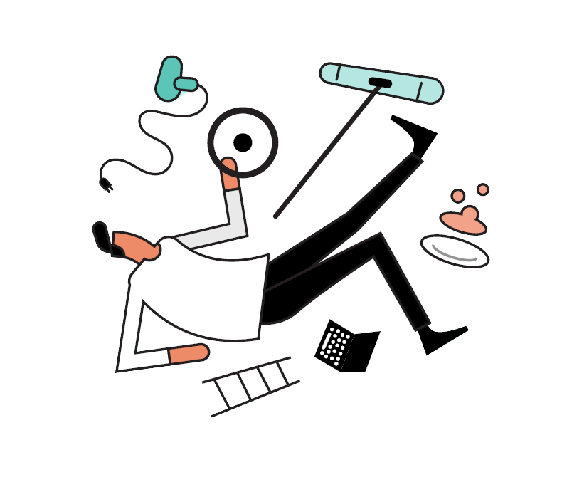

HMS
Godt arbeidsmiljøarbeid handlar om å redusere risiko for farar og ulykker og aktivt rette søkelyset mot dei positive og helsefremmande faktorane i arbeidsmiljøet.
Skal sikre miljø og gi tryggleik
I fleire ulike lover er det reglar om at produksjon, produkt og tenester skal oppfylle forskjellige sikkerheits- og kvalitetsvilkår. Det blir også stilt krav til lokalar, verneinnretningar og tilrettelegging av arbeidet for å sikre ytre miljø og gi tryggleik for dei som gjer jobben. Ein vanlig samlenemning for dette området er HMS: helse, miljø og sikkerheit.
Systematisk arbeid med HMS
Rutinar for HMS treng ikkje vere særleg omfattande for små bedrifter med lite risikofylt aktivitet. Kravet til det systematiske HMS-arbeidet er det same for alle verksemder.
HMS-forskrifta blir også kalla internkontrollforskrifta.
Verktøy for risikovurdering
Risikohjelpen er eit digitalt verktøy for risikovurdering i bransjane frisør, reinhald og transport. Her kan de vurdere vanlege risikofaktorar på jobben og få handlingsplan med forslag til tiltak de kan gjere.
Gå til risikohjelpen